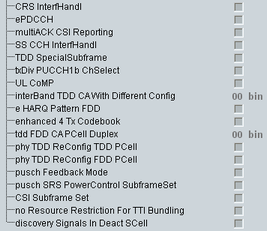

This section indicates physical layer capabilities of the UE.

Support of CRS interference handling.
Remote command:Support of DCI reception via UE-specific search space on enhanced PDCCH.
Remote command:Support of multi-cell HARQ ACK, periodic CSI reporting and SR on PUCCH format 3.
Remote command:Support of synchronization signal and common channel interference handling.
Remote command:Support of TDD special subframe as defined in 3GPP TS 36.211.
Remote command:Support of transmit diversity for PUCCH format 1b with channel selection.
Remote command:Support of UL coordinated multi-point operation.
Remote command:Support of inter-band TDD CA with different UL/DL configuration combinations.
Remote command:Support of enhanced HARQ pattern for TTI bundling operation for FDD.
Remote command:Support of enhanced 4 TX codebook.
Remote command:Support of PCell in any supported band combination including at least one FDD band and at least one TDD band.
First bit: support of TDD PCell. Second bit: support of FDD PCell.
Remote command:Support of TDD UL/DL reconfiguration for TDD serving cell via monitoring PDCCH on a TDD PCell.
Remote command:Support of TDD UL/DL reconfiguration for TDD serving cell via monitoring PDCCH on an FDD PCell.
Remote command:Support of PUSCH feedback mode 3-2.
Remote command:Support of subframe set dependent UL power control for PUSCH and SRS.
Remote command:Support of R12 DL CSI subframe set configuration.
Remote command:Support of TTI bundling without resource allocation restriction.
Remote command:Support of discovery signal detection for deactivated SCells.
Remote command: